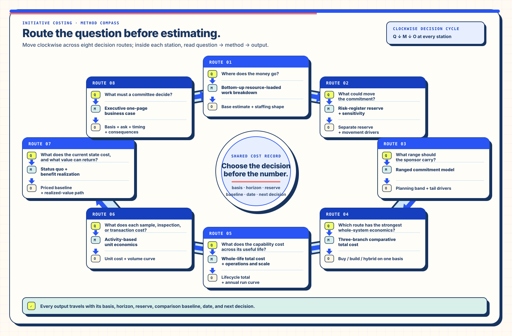

Enterprise costing · eight decision lenses · staged capital
Initiative Costing
Choose the method by the decision
A build estimate, a commitment range, a build-or-buy comparison, a unit cost, and a funding ask answer
different questions. This guide connects each question to a method and keeps basis, horizon, reserve, and
consequences visible.
At a glance
First move
Name the decision the number must support, then select the method.
Financial factors in view
One-time work, risk reserve, run cost, unit economics, status-quo cost, realized value, and capital timing.
Primary readers
Technical and program leaders, finance partners, delivery owners, operating teams, and funding committees.
Required anatomy
Basis, horizon, inclusions, adjacent costs, reserve, volume driver, comparison baseline, date, and next decision.
Interpretation
Figures travel as planning bands with their assumptions and operating context.
Changed practice
A single total becomes a linked set of decision-specific analyses.
Test-drive the method family
Cross-Functional Investment Model Studio
Select the decision first, then inspect the method’s inputs, outputs, work split, evidence boundary, and
complete Markdown handoff together. The fixed reading keeps the investment consequence visible while each
model retains its own terms and calculation rules.
Eight keyboard-operable method views share one worked-example initiative state. The complete method table on
this page remains the full reading when scripting is unavailable.
Open the Studio at full size
I. Route the question before estimating
Costing starts with the decision boundary. A delivery team needs line-item accountability. A sponsor needs a
commitment range and its movement drivers. An architecture group comparing buy, build, and hybrid routes needs
one common basis and horizon. An operating owner needs whole-life and per-unit cost. A funding committee needs
those readings compressed into an ask whose timing and consequences remain inspectable.
One initiative can therefore carry several linked methods. The resource-loaded work breakdown supplies the base;
the risk register supplies the reserve; whole-life and unit-cost views expose the operating curve; the value case
prices the current state; and the executive readout draws from each source while the underlying readings remain intact.

Start at any numbered decision station and read question, method, then output. Move clockwise when the
initiative needs linked readings; every output remains attached to its basis, horizon, and next decision.
II. Eight methods — one selection test each
Reach for the narrowest method that answers the live question, then link adjacent methods where the decision
crosses delivery, operating, and investment boundaries.
Choose a costing method by the decision it must make legible
Decision question
Method
How it works
Decision-ready output
Where does the money go?
Bottom-up resource-loaded work breakdown
Decompose work into packages; assign named roles, hours, loaded rates, dependencies, and assumptions.
Auditable base estimate, staffing shape, schedule basis, and assumption register.
What could move the commitment?
Risk-register reserve and sensitivity
Translate lived delivery risks into named cost and schedule exposures; rank the drivers that move the envelope.
Separate reserve, sensitivity view, risk owners, and risk-reduction actions.
What range should the sponsor carry?
Ranged commitment model
Aggregate low, likely, and high inputs so joint variation becomes visible across the initiative.
Planning band, commitment band, tail drivers, and the assumptions that narrow the range.
Which route has the strongest whole-system economics?
Three-branch comparative total cost
Place buy, build, and hybrid routes on the same scope, time horizon, volume, transition, and support basis.
Comparable option table with timing, lock-in, switching, operating, and exit costs.
What does the capability cost across its useful life?
Whole-life total cost with operations and scale
Combine one-time change with run rate, support, parallel operation, scaling, migration, and decommissioning.
Lifecycle total, annual run curve, one-time versus recurring split, and scale breakpoints.
What does each sample, inspection, or transaction cost?
Activity-based unit economics
Allocate fixed and variable work to the operational driver and test the curve at relevant volumes.
Unit cost, capacity curve, cost drivers, and the volume at which each route changes shape.
What does the current state cost, and what value can return?
Benefit realization, status quo, and return
Price current-state failure demand and delay; connect each benefit to a mechanism, owner, ramp, and measure.
Priced baseline, benefit schedule, payback path, and realized-value review points.
What must a committee decide?
Executive one-page business case
Compress linked methods into the number, basis, top movement drivers, timing, choices, and explicit ask.
Decision brief with recommendation, funding tranche, consequences, and next review.
The executive page summarizes the other methods. The supporting calculations remain available for review,
revision, and operating handoff.
III. Costing principles — preserve what makes the number useful
Base and reserve stay separate
The base describes the planned work. The reserve describes named exposure around that work. Their separation
lets a sponsor see what delivery costs before risk materializes and which actions can retire exposure.
Roles and hours precede dollars
Every work package names the people, effort, dependencies, and rate basis that construct its cost. A reviewer can
then challenge staffing or scope directly instead of negotiating against an opaque total.
The uncomfortable lines remain visible
Migration, reconciliation, parallel operation, legacy decommissioning, internal backfill, cutover interruption,
quality assurance, training, and support belong in the same cost analysis as feature delivery.
Lived failures supply the risk register
Reverted launches, silent skips, missing records, long-running batch work, inherited defects, key-person exposure,
and spot-check escapes are stronger cost drivers than generic risk labels because they name the recovery work.
The status quo is a priced option
Delay, rework, failure demand, duplicate entry, reconciliation, incident response, and opportunity cost make the
current state economically comparable with a proposed route.
Speculation — How a market carries what it cannot yet price with confidence.
Here, the sponsor carries timing, delivery, and opportunity risk while each bounded tranche buys evidence that can revise the next price and authorization.
Capital follows useful capability
Each tranche buys a specific learning or operating capability. The resulting operating state defines what the
next tranche can purchase, while narrow and fallback routes remain available before additional capital opens.
The incumbent remains runnable through transition
Parallel operation protects continuity while migration, restore, support, and recovery tests establish that the
successor can carry the work. Decommissioning follows demonstrated operating readiness.
Labor and readiness shape the first-year curve
Quality assurance, support, migration, reconciliation, training, operating readiness, and change leadership can
dominate raw hosting expense. A whole-life view makes that work fundable.
Every band carries its basis
A planning band travels with scope, date, currency, horizon, team, rate basis, volume, exclusions, reserve, and
the decision it supports. New learning narrows or reshapes the band while preserving its earlier basis.
IV. Number-reading key — inspect the operating meaning
Before a number travels into a roadmap, contract, or funding conversation, its reader should be able to answer
each question below from the same surface.
The minimum anatomy of a decision-bearing cost figure
Field
Question it answers
Useful expression
Decision
What choice will this figure support?
Fund a tranche, compare routes, set an operating target, or authorize the next discovery.
Basis
What constructs the figure?
Work packages, named roles, hours, rates, vendor inputs, and explicit assumptions.
Horizon
Which time boundary applies?
One-time change, first-year operation, multi-year asset life, or a dated transition period.
Included work
Which activities sit inside the band?
Discovery, build, migration, quality, enablement, support, parallel run, and decommissioning as applicable.
Adjacent cost
Which real work sits elsewhere?
Internal backfill, procurement, hardware, policy work, vendor termination, downtime, and local rollout.
Reserve
Which named exposures sit outside the base?
A separate line connected to risk drivers, owners, triggers, and reduction actions.
Volume driver
What changes the operating curve?
Samples, inspections, transactions, sites, users, integrations, records, or peak throughput.
Comparison baseline
What shares the same basis and horizon?
Current state, buy, build, hybrid, narrow, defer, or another explicitly scoped route.
A named diligence result, signed scope, pilot result, vendor response, or operating measurement.
A range with this anatomy supports comparison, revision, and handoff as the initiative learns.
V. Ongoing example — stage capital against the next useful proof
The field-inspection re-platform illustrates how a large platform decision can become a sequence of bounded
investments. Each stage buys a distinct capability while the incumbent workflow remains available. These figures
are current planning bands for an ongoing Canada-market program. A priced proposal requires current
scope, team, rates, vendors, access, and operating inputs.
Field Inspection Harness re-platform — ongoing staged-capital reading
Stage
What the tranche buys
Duration
Planning band
Useful state purchased
Stage 0
Operating baseline and architecture decisions
3–4 weeks
USD 8k–15k
Workflow, migration, device, integration, customer-economics, and operating baselines.
Stage 1
Dealer-operations bridge with Clappia retained
6–10 weeks
USD 20k–35k
Install-free intake, stable handoff, and measured bridge use.
Stage 2
Native offline field application
10–16 weeks
USD 30k–50k
Recoverable capture, resumable synchronization, and an independently useful field application.
Stage 3
Integration and production hardening
8–12 weeks
USD 25k–45k
Production controls, support route, migration readiness, and tested recovery behavior.
Reserve
Named contingency held separately
Across stages
Approximately 15%
Risk-register exposures, triggers, owners, and reduction actions.
Full envelope
Stages 0–3 plus separate reserve
Sequential 27–42-week chain
Approximately USD 95k–167k
Each useful operating state shapes the subsequent funding decision.
The current first-year total-cost band is approximately USD 125k–230k. Quality assurance, support,
migration, reconciliation, and operational readiness shape the band more than raw hosting expense. The
27–42-week chain, a retained 26-sprint plan, and a compressed parity estimate remain separate schedule
artifacts; circulation requires schedule reconciliation.
Carry one scenario through five investment domains
The working instruments use two chapters: the familiar planning or method-selection surface, followed by a full-width layered comparison. Top links and the calculator's Comparison rail entry lead to a visible accepted-state brief. Open individual analytical sections as the question deepens. Direct Receipts pair current measures with focused routes to their inputs; the calculator's standalone report captures both the planning account and accepted analytical details. Blank values, explicit zero, evidence standing, currency, and period travel with that account.
The calculator now separates allocated staffing from additional activity, recovery, and quality work through explicit overlap shares. Both instruments offer the same local analysis contract for commercial cohorts, pricing, cash-flow alternatives, service cost-consequence, and reversible decisions. Their original change-framework and method-selection roles remain distinct.
Start with the synthetic comparison, edit the consequential inputs, and export its JSON into the other instrument. The accessible tables and plain-text comparison capsule derive from the same state. A rejected import leaves accepted state available. Blank, invalid, inapplicable, ambiguous, and unreached results explain the input or decision they need.
Cash flows carry every intended amount once; staffing references and service budget effects remain separate views until an explicit transformation joins them. Service outcomes, evidence standing, and human authority retain their own review. The About page's tabular counterpart supplies the compact static reading.
Source basis
The program frame connects the methods. The Distributed Inspection Harness shows how the principles and
staged-capital example shape a complete planning analysis. Each method page preserves its own calculation and selection test.